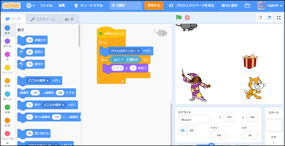
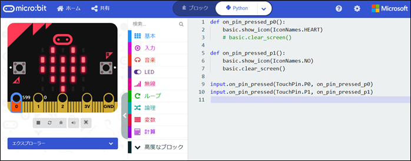

「CoderDojo 青梅」何ができるの？
CoderDojo 青梅とは？
2020年から小学校でプログラミング教育が必修化となりました。 今はまだ多くの人が単なるパソコン教育と誤解されているかも知れません。 プログラミングは教えて習得するよりは自分から学んで得意としていくものであり、 また自ら学ぶ子は、同じ趣味特技の仲間を作ることで成長します。そこで、７～１７歳を対象とした プログラミング仲間の集まれる場所作りをしたいと考えています。東京都のCoderDojoとしては最西端になる青梅市で。
コミュニティであり、パソコンやプログラミングを教える教室ではありません。プログラミングという共通のテーマを持って、 子どもたちが作成したアニメーションやゲームなどの作品を発表できる場所、同じ興味を持った子どもたちの集まる場所を用意します。 とは言いつつ、わからないことや知りたいことがあればメンターに相談することもできます。
ここで学べること
- ニンジャ（子ども）たちには、基本、自由に自分の興味がある作品をつくってもらい、その作品を発表できる場所にします。
- 何をやればいいのか悩んでいるニンジャたちは、みんなで共通のテーマに沿って作品づくりをしましょう。
- メンター/ボランティアの方々には、希望に応じて別枠で勉強会を企画したいと思います。
プログラミングを教える教室ではありません。同じ興味を持った子どもたちの集まる場所を用意し、みんなで広い知識の習得に励みます。
プログラミング対象
Scratchほか、何でもOK（micro:bit、ラズパイ、WEBサイト制作、python 等）
▼Scratch

▼micro:bit

Scratchの作品例
ペンギンが楕円の軌跡を移動するにはSin/Cosの計算も利用します
サスケは、重力の影響を考えた移動をします

ハロウィーンベーダーは、複数のかぼちゃを一斉に操作します
ピタゴラスイッチは、あーしたら、こーなって、動作の繋がりと工夫を考えます
ミサイルコマンドは、目標地点までの軌跡を二次元方程式で描きます

動く絵画。アートにも挑戦
本格的なゲームだって作れちゃう
アニメーション。フルーツで打ち上げ花火
開催方法
今後の企画・運営を計画しています。新型コロナ感染対策のため人数を減らしての開催やオンラインでの開催(zoom利用)を検討します。 ボランティアおよび参加したい子どもを募集しています。開催日はご希望に合わせて調整します。

（参考）Champion(主宰者)の取り組み
プログラミングは何かを実現するための手段です。漠然とプログラミング出来るようになりたい、ということを目標にするよりは、 何かを作りたい、ということを目標にした方が、やる気も根気も習得の効率も良い。僕は興味がある技術を見つけたらとりあえず 触ってみて体験して、「funnyGeek」というブログで記事にしてプログラミングを学んでいます。

funnyGeekの記事はこちら：funnyGeek